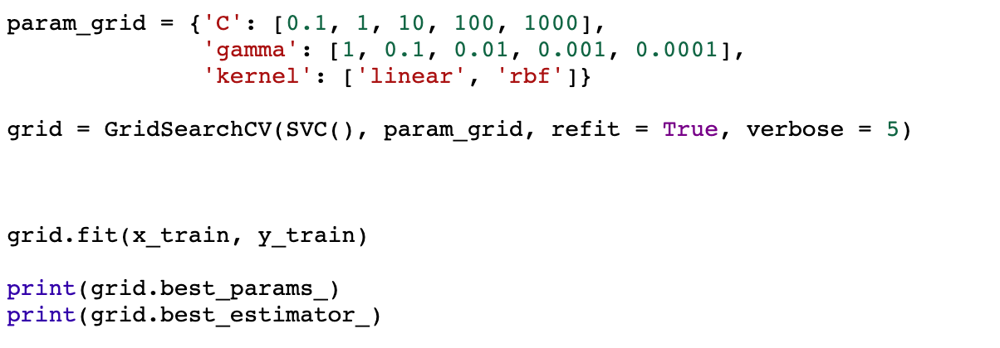
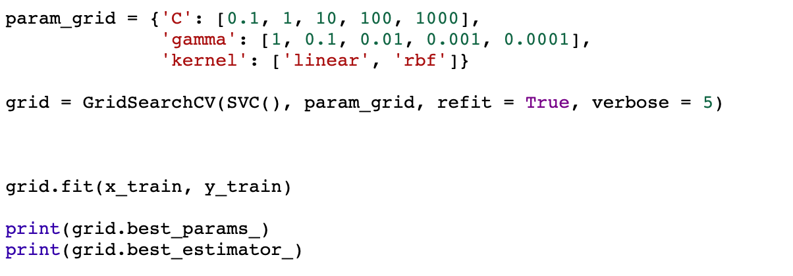

Dataset and Project Overview
Our dataset comes from kaggle.com and it focuses on different health conditions people have and tells us whether or not each person had a heart attack.
As for metrics used to predict heart attacks, this dataset takes into consideration things including age, sex, exercise induced angina, number of major vessels, chest pain, resting blood sugar, cholestoral, fasting blood sugar, resting electrocardiographic results, and maximum heart rate achieved. Using these metrics we found comparisons for different metrics in ratio to the overall chance of said person experiencing a heart attack some time in their future.
We also used this data set to create visual models to help predict the chance of having a heart attack.
Exploratory Data Analysis (EDA)
Dataset
| age | sex | CP | trtbps | chol | fbs | restecg | thalachh | exng | oldpeak | slp | caa | thall | output | |
|---|---|---|---|---|---|---|---|---|---|---|---|---|---|---|
| 0 | 63 | 1 | 3 | 145 | 233 | 1 | 0 | 150 | 0 | 2.3 | 0 | 0 | 1 | 1 |
| 1 | 37 | 1 | 2 | 130 | 250 | 0 | 1 | 187 | 0 | 3.5 | 0 | 0 | 2 | 1 |
| 2 | 41 | 0 | 1 | 130 | 204 | 0 | 0 | 172 | 0 | 1.4 | 2 | 0 | 2 | 1 |
| 3 | 56 | 1 | 1 | 120 | 236 | 0 | 1 | 178 | 0 | 0.8 | 2 | 0 | 2 | 1 |
| 4 | 57 | 0 | 0 | 120 | 354 | 0 | 1 | 163 | 1 | 0.6 | 2 | 0 | 2 | 1 |
Please note the following meaning of each metric.
- age: The person's age in years.
- sex: The person’s sex (1 = male, 0 = female)
- cp: chest pain type (Value 0: asymptomatic, Value 1: atypical angina, Value 2: non-anginal pain, Value 3: typical angina)
- trtbps: The person’s resting blood pressure (mm Hg on admission to the hospital)
- chol: The person’s cholesterol measurement in mg/dl
- fbs: The person’s fasting blood sugar (> 120 mg/dl, 1 = true; 0 = false)
- restecg: resting electrocardiographic results (Value 0: showing probable or definite left ventricular hypertrophy by Estes’ criteria, Value 1: normal, Value 2: having ST-T wave abnormality (T wave inversions and/or ST elevation or depression of > 0.05 mV))
- thalachh: The person’s maximum heart rate achieved
- exng: Exercise induced angina (1 = yes; 0 = no)
- oldpeak: ST depression induced by exercise relative to rest (‘ST’ relates to positions on the ECG plot. See more here)
- slp: the slope of the peak exercise ST segment — 0: downsloping; 1: flat; 2: upsloping
- ca: The number of major vessels (0–3)
- thall: A blood disorder called thalassemia Value 0: NULL (dropped from the dataset previously (Value 1: fixed defect (no blood flow in some part of the heart), Value 2: normal blood flow, Value 3: reversible defect (a blood flow is observed but it is not normal))
- output: Heart attack (1 = yes, 0= no)
Correlation Heatmap
First we created a correlation table to see how different medical metrics correlated with the heart attack risk of a person. Some of the metrics that had the highest level of influence on the result included chest pain, maximum heart rate achieved in beats per minute, and presence of a single locus probe. Meanwhile, blood loss rate, ST depression induced by exercise relative to rest, number of major vessels, and a diagonoses of a heart disease known as thalassemia had high negative correlations to the end prediction.
Heart Attack Risk
|
While the chance of a heart attack for males and females are fairly similar, males have a higher probability to get a heart attack overall. |
|
As you can see from this histogram, there are two peaks where people are at the highest risk of having a heart attack: one peak contains people between the ages of 41-45 and the other peak contains people of ages 51-54. It also seems that people below the age of 40 and above the age of 70 have lower chances of getting a heart attack. |
Integrating Machine Learning
Machine learning is a beneficial aspect to our project that allows users to submit their data to our computer algorithm, which then analyzes it to make data-driven suggestions and decisions based only on the input data.
By examining variables such as age and sex, our models predict the chances of a possible heart attack. We also used a confusion matrix to help us understand how well our model is performing, what kind of errors are being made (if any), and an overview of what we need to change to make our model as efficient and accurate as possible.
confusion matrix = direct comparisons between actual values and predicted values are made to refine accuracy.
About our Machine Learning Models
Our models use classification; instead of predicting a value through regression, they classify data into categories. We used 4 different machine learning models:
- KNN Model
- SVM Model
- Random Forest Model
- Gradient Boosting Model
As you continue scrolling through our site, you will find information about each of our models and how we used them to represent our dataset.
KNN Model
A KNN model is a supervised learning model that uses the distance between the neighbors around a point to check how similar they are and classify the point. The k is the amount of surrounding points that will be considered to classify a point.
In our KNN model, we created a for-loop to find an optimal k-value that gives us the best accuracy of classifying whether someone will experience a heart attack or not. When we plugged in one of our optimal k-values, we were able to get an accuracy of 88.5% and a recall value of 0.89 (false positive score of 4).
false positive score of 4 = the probability that our KNN model determines that a person will have a heart attack in the future when in reality, they will not.
SVM Model
An SVM model is a model that finds a hyperplane (a divider) in an N-dimensional space.
The hyperplane helps separate and distinctly classify data points. To separate the two classes of data points, there are many possible hyperplanes that could be chosen. We needed to help the computer choose a hyperplane that provides the greatest accuracy when classifying data points, so SVM models were perfect for classification applications like ours.
Below, we have displayed an image of our confusion matrix to ensure that this model is reliable and lines of code we used to find the best hyperplane values (GridSearchCV).
 
Random Forests Model
A random forest model is a collection of decision trees which is used to help predict an outcome. Some examples of random forest models can be found in applications such as online personality quizzes or created when coding if-else statements. The random forest algorithm is an extension of the bagging method.
As this model is incredibly complex and requires an extensive fine tuning of its parameters, we created several variations of it to ensure that we receive consistent accuracy rate.
In one variation, we used a for-loop to fine tune the n_estimators and random_state variables. This resulted in us getting a very high accuracy of 96.7% and a recall value of 0.97 (false negative score of 1).
In another variation of the random forest model, we used GridSearchCV to find the optimal parameters for Random Forests. A K-Fold Cross-Validation model was also created to manipulate the testing and training sets using the best hyperparameters from the GridSearchCV to get the best accuracy. With this variation, we received an accuracy rate of 92% and a recall score of 0.947.
false negative score of 1 = the probability that our random forest model determines that someone will not have a heart attack in the future when in reality they will.

Gradient Boosting Model
When we used our gradient boosting model, the accuracies were consistently around 75%. This model relies a great deal on learning from mistakes made through past models.
We calculated the mean absolute error based off our testing data, and then proceeded to tune individual hyperparameters. We used n_estimators, learning rate, and other parameters to make predictions. We then used GridSearchCV to evaluate our best parameters and create a model based off these parameters and the gradient boosting classifier. A confusion matrix was created for this model to better display its accuracies, precisions, and an ROC curve highlighting a correlation between the true positive rate and the false positive rate.
Conclusion and Final Thoughts
Model Comparision
| Model Name | Accuracy Value | Recall Value | Precision Value |
|---|---|---|---|
| KNN | 88.5% | 0.89 | 0.763 |
| SVM | 85.25% | 0.944 | 0.736 |
| Random Forest | 96.7% | 0.97 | 0.450 |
| Random Forest (Gridsearch CV) | 92% | 0.947 | 0.820 |
| Gradient Boosting | 77% | 0.784 | 0.828 |
In conclusion, we found that our random forests model performs the best as it was able to yield the greatest accuracy for predicting the likelihood of having a heart attack compared to other models. This model uses various decision trees that collects samples of the dataset and averages them out to make a final prediction, resulting in a high accuracy.
Why is this significant?
We found this project to be significant to us because by predicting the chances of a possible heart attack ahead of time, we give people the opportunity to take preventative measures such as going to the doctor, exercising more, and lowering blood pressure based on the produced results.